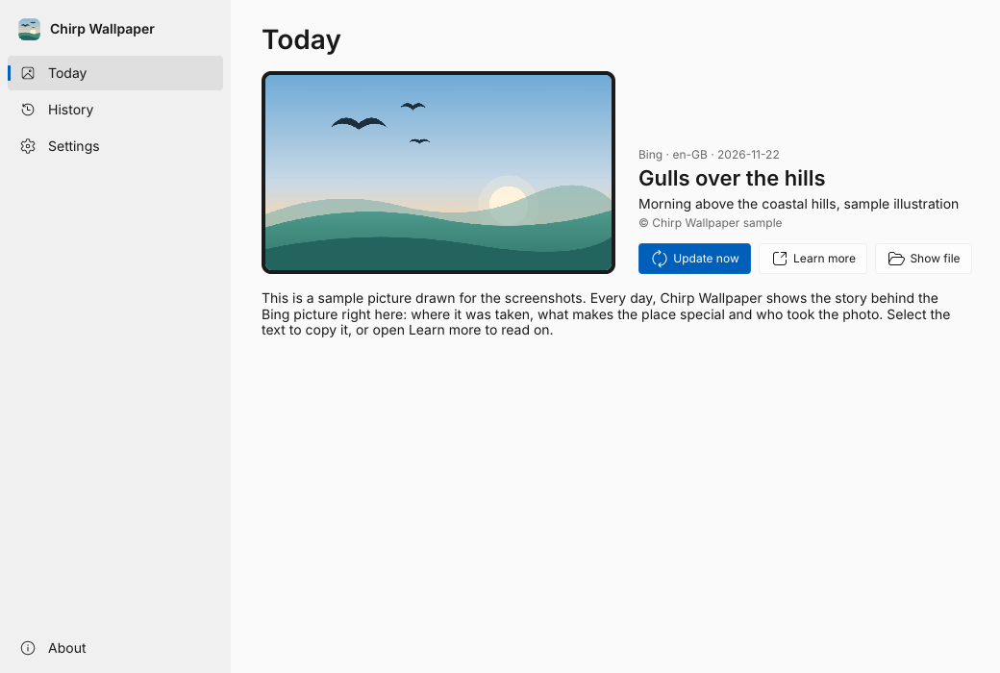
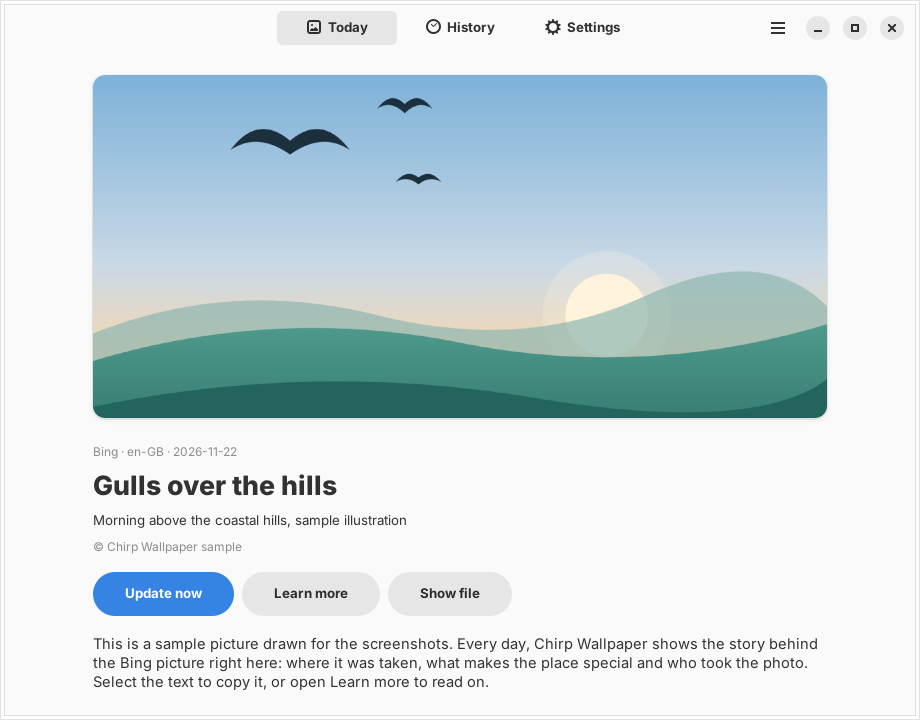

What it does
Desktop and lock screen
The same picture on both, changed automatically at sign-in and every hour.
The story behind it
Title, place, copyright and a short text about every picture, with a link to learn more.
In your language
21 languages. Bing pictures and texts follow your region, e.g. German texts for Germany.
Offline? No problem
If no new picture can be loaded, nothing changes. The app remembers why and tells you.


Get started
Download ChirpWallpaper.exe and double-click it. Under Settings, turn on “Start automatically at sign-in”: the app then waits in the notification area and changes the picture every day. No shortcut in the Startup folder needed.
For all users of a computer
On shared computers, choose Settings → “Set up for all users” once. The app is copied to Program Files, the lock and sign-in screen show the picture for everyone, and the app starts for every account. Administrators can do the same with the command line program.
chirp config --machine --market de-DE
chirp install --machine
chirp apply --machine